Use Case
When we deploy any resources in AWS, which are public facing or not there is always an attempt by the hackers to get into the resources and compromise them for their own benefit. This resource can be an EC2 instance, an S3 Bucket, an RDS instance or anything else. There are always hackers and we need to be on a constant alert against them.
AWS provides GuardDuty which is a managed service that continuously monitors for malicious or unauthorized behaviour to help protect your AWS accounts and workloads. Once GuardDuty has been enabled, it automatically monitors for
· Anomalous API activity
· Potentially unauthorized deployments and compromised instances
· Reconnaissance by attackers
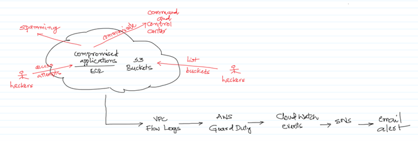
In this use case, we will perform the below activities and check if GuardDuty is able to identify them and alert us. These are the scenarios of a hacker attempting to get into a system or a compromised system.
- Create a Windows EC2 instance and make a connection to a Tor Guard or an Authority node.
- Hacker performing some reconnaissance from Kali Linux on the S3 buckets.
- Invoking AWS API using root credentials.
All the above can involves network traffic which can be captured by the VPC Flows, which GuardDuty automatically analyses and checks for any anomaly. If any, it would send an event to CloudWatch which trigger an email via SNS service.
Note that in this use case we create an EC2 instance and an S3 bucket and perform some of the steps which are typically performed by hackers or any compromised applications and check if GuardDuty is able to identify them and notify us.
AWS Services: GuardDuty, EC2, S3, VPC, CloudWatch, SNS, SES
-- Navigate to the SNS Management Console and enter the `Topic name` and click on `Next step`.
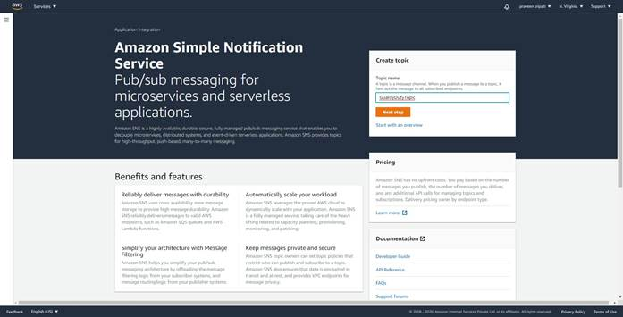
-- Go with all the default options and click on `Create topic`.
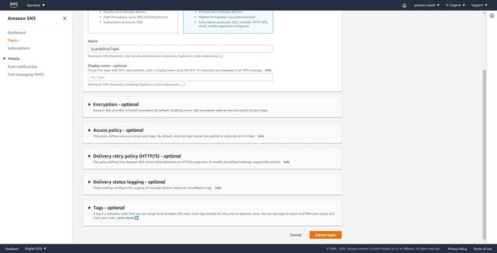
-- Click on `Create subscription`.
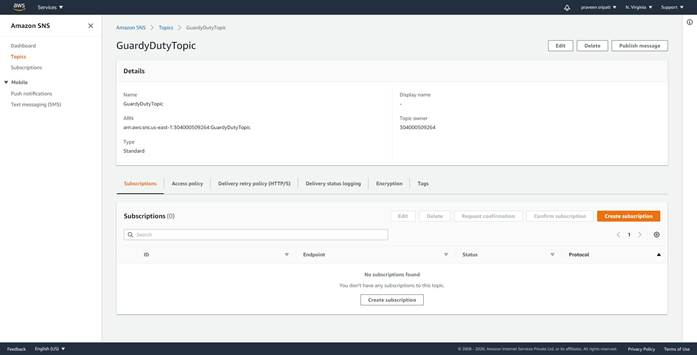
-- Select Email for the Protocol and the email address for the Endpoint. Click on `Create subscription`.
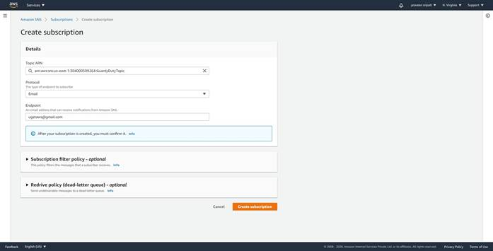
-- SNS would be sending an email and we need to open the email and click on the link to change the status of the subscription from pending to confirmed status. Once in a while the email is marked as spam. So, make sure to check the spam folder also.
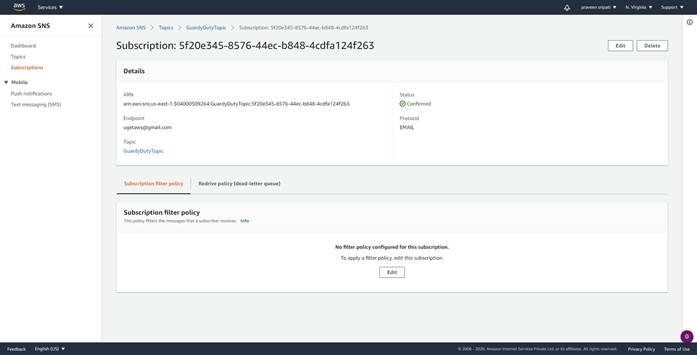
-- Go to the CloudWatch Management Console and to the Rules tab. Click on `Create rule`.
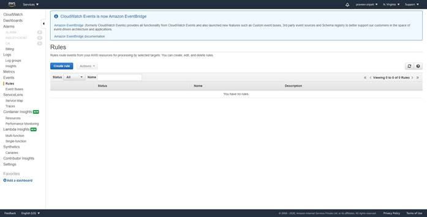
-- Enter the attached event-pattern.json in the `Event Source`. Click on `Add target`.
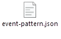
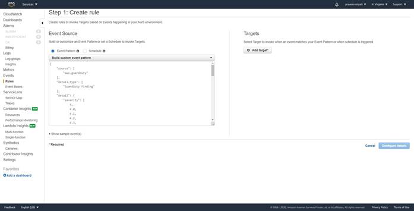
-- Select the `SNS Topic` and the Topic created in the previous steps. Select `Input Transformer` and enter the below JSON.
{
"severity": "$.detail.severity",
"Finding_ID": "$.detail.id",
"Finding_Type": "$.detail.type",
"region": "$.region",
"Finding_description": "$.detail.description"
}
And for the `Input Template` enter the below text and click on `Configure details`.
"You
have a severity <severity> GuardDuty finding type <Finding_Type> in
the <region> region."
"Finding Description:"
"<Finding_description>. "
"For more details open the GuardDuty console at
https://console.aws.amazon.com/guardduty/home?region=<region>#/findings?search=id%3D<Finding_ID>"
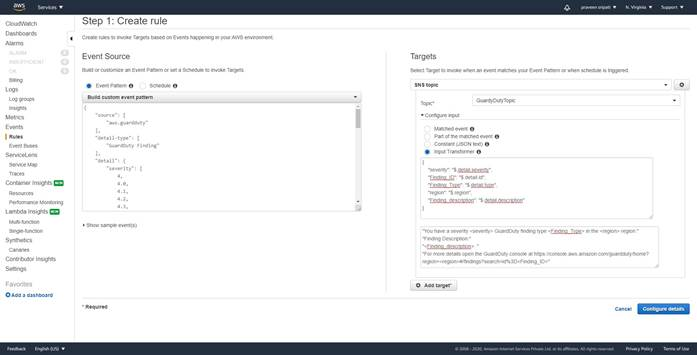
-- Give the rule a name and enter some description. Click on `Create rule` to create the rule.
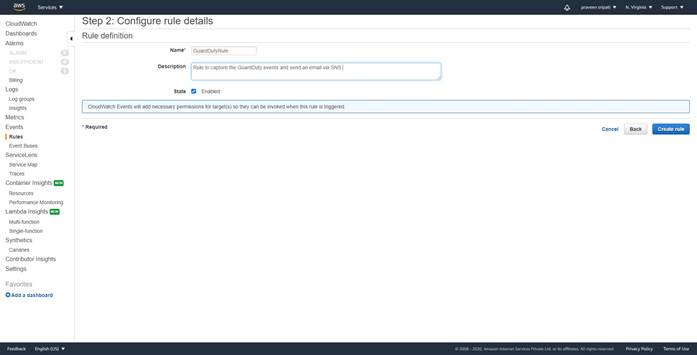
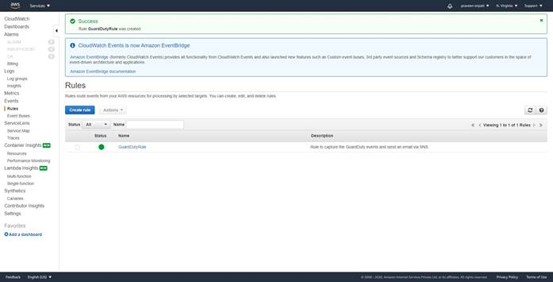
-- Navigate to the GuardDuty Management Console and click on `Get started`.
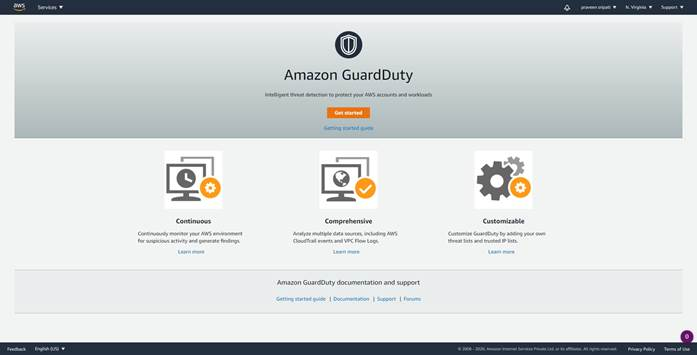
-- Click on `Enable GuardDuty`.
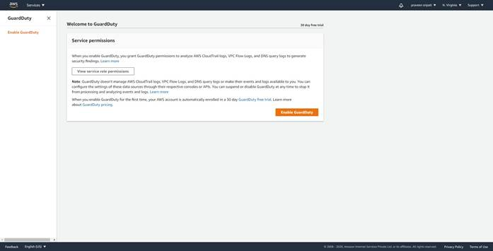
-- GuardDuty is free for 30 days once we enable it. Go to the Usage tab to figure out how many days are left for free.
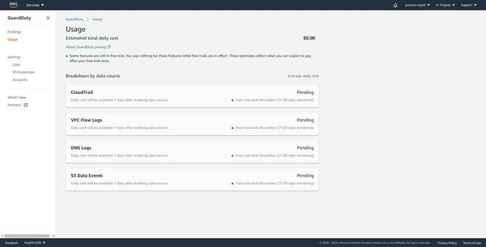
-- Under the Settings tab change the `Frequency for updated findings` to 15 minutes and click on Save.
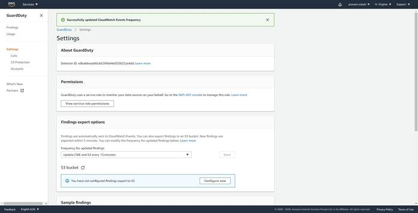
-- For some reason, if we want to disable GuardDuty then in the same Settings tab, there is an option `Disable GuardDuty`. For now, keep it enabled, so there is no need to make any changes.
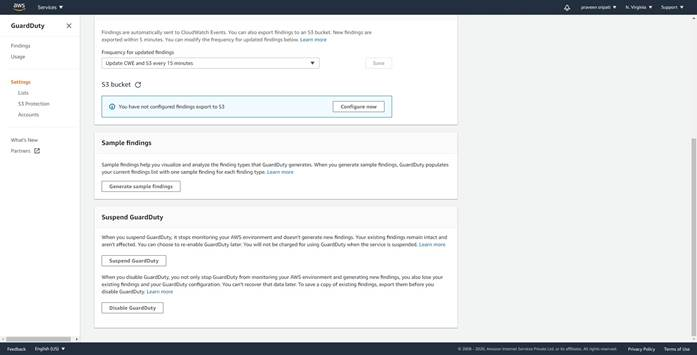
-- In the EC2 Management Console, create a Security Group with the all the traffic allowed inbound as shown below. This is not really a recommended approach, but is fine for the same of demos.
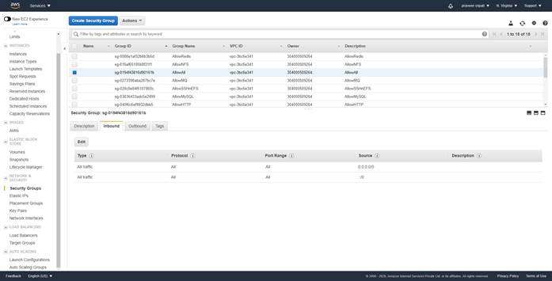
-- Launch an EC2 instance and select `Kali Linux` under the `AWS Marketplace`. `Kali Linux` is mainly used for penetration testing and any action which we take against AWS resources will be captured by GuardDuty as an anomaly.
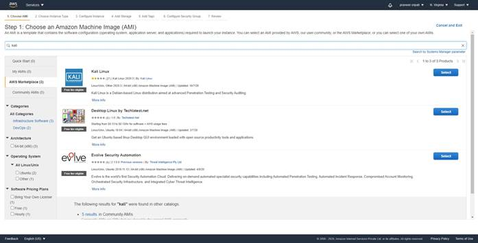
-- Click on Continue around the pricing details.
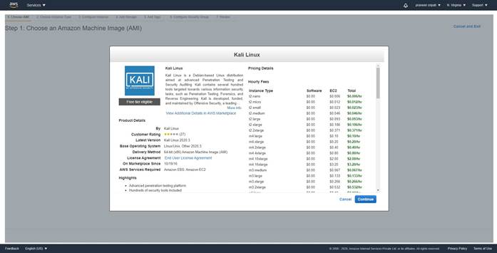
-- Make sure to select `t2.micro` as it falls under the AWS free trial. Click on Next.
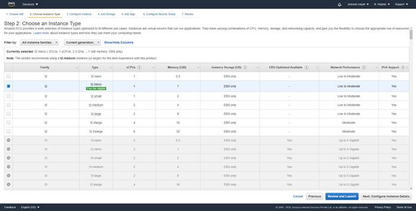
-- Go with the default options under the `Configure Instance Details` and click
on Next.
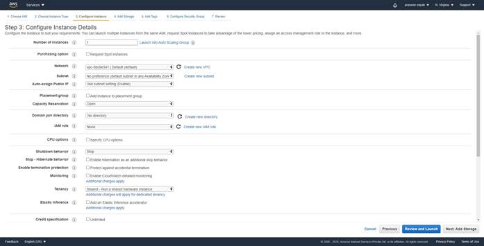
-- On this EC2 instance, we would be installing a bunch of softwares so change the storage from the default 8GB to 15GB. Click on Next,
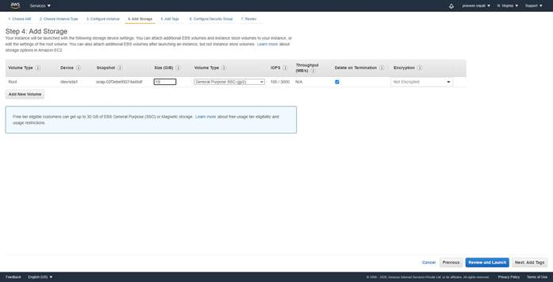
-- Tags are optional. Click on Next.
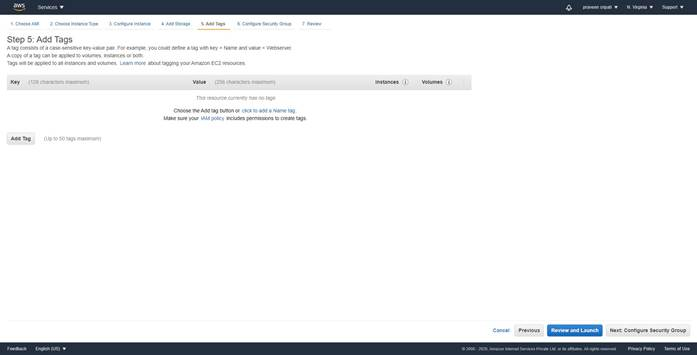
-- Under the `Select an existing security group` select the Security Group which has been created in the previous step. Click on Next.
-- Review all the details and click on Launch.
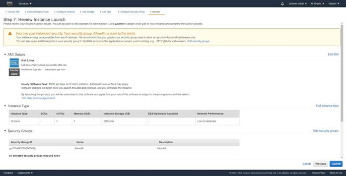
-- Make sure to select the KeyPair, select `I acknowledge ….` and click on `Launch Instances`.
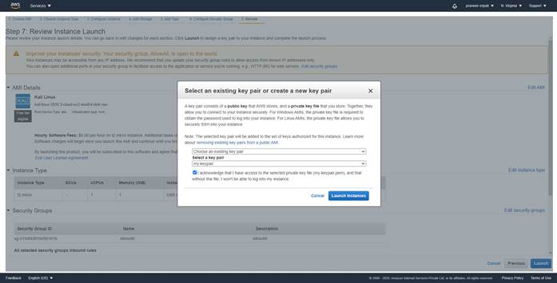
-- The EC2 instances would in a `running` state in a few minutes.
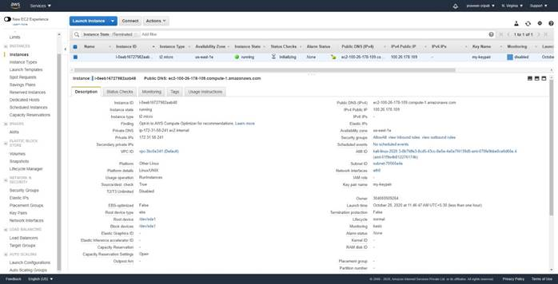
-- Go to the IAM Management Console and to the Roles tab. Click on `Create role`.
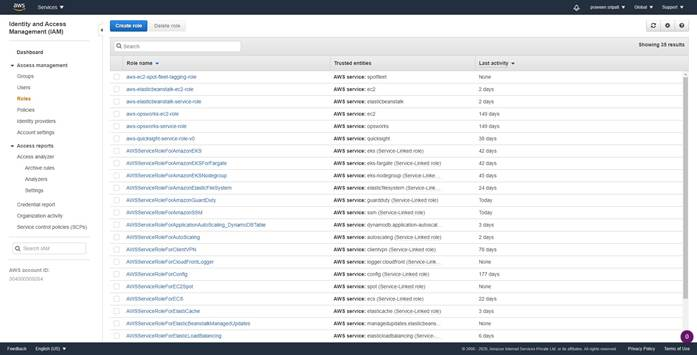
-- Select EC2 under `Common use cases` and click on Next.
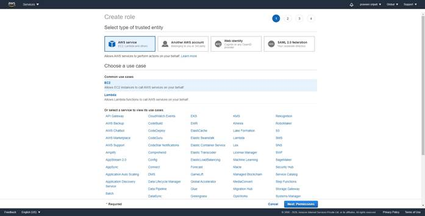
-- Select `AdministratorAccess` Policy and click on Next.
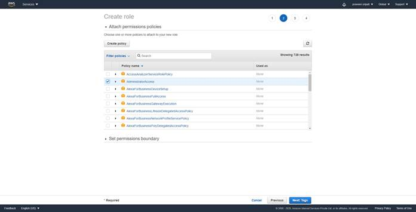
-- Tags are optional. Click on Next.
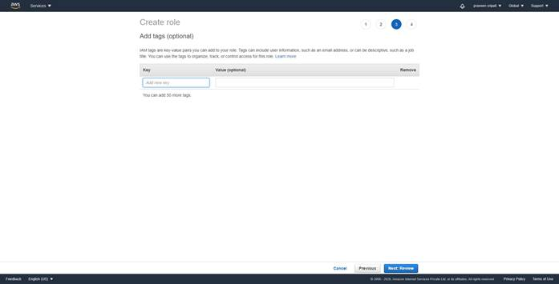
-- Give the Role a name and click on `Create role`.
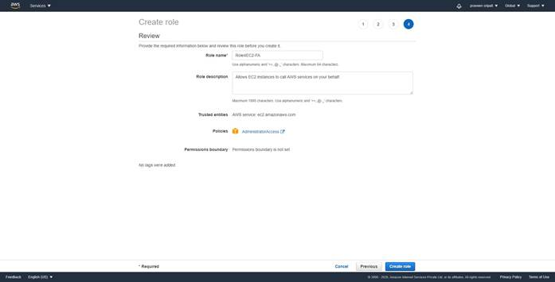
-- Attach the IAM Role to the earlier created EC2 instance.

-- Connect to the EC2 instance via Putty or some other SSH client. Note that the user name to connect to the EC2 instance is `kali`.
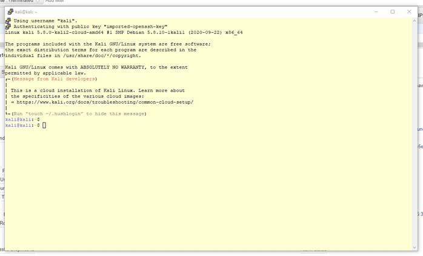
-- The below actions have to be performed on the Kali Linux
a) Execute the below commands
sudo
apt update
sudo apt install -y xfce4 xfce4-goodies tightvncserver midori python3
python3-pip
pip install awscli –upgrade
export PATH="$PATH:/home/ubuntu/.local/bin/"
b) Execute the `aws configure` command and enter `us-east-1` for the default Region and leave rest of the fields without anything.
c) Execute the `vncpasswd` command and enter the `kali123` password thrice as shown below at the end.
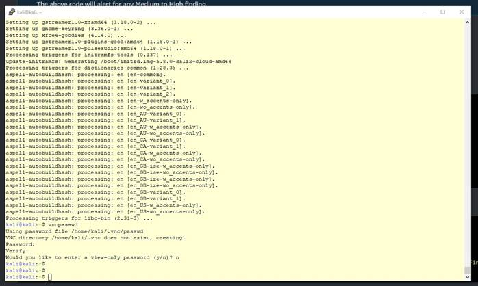
d) Create a file in the ~/.vnc/xstartup path with the below content
#!/bin/bash
xrdb $HOME/.Xresources
startxfce4 &
e) Change the permissions on the above file and execute the vncserver command.
chmod
+x ~/.vnc/xstartup
vncserver
-- Create a file called `threat-list.txt` with the IP address of Google and the Public IP of the EC2, one IP address per line as shown below. The IP address of the Google can be got by executing `ping google.com` command from the Windows Command Prompt.
a.b.c.d
m.n.o.p
Create an S3 bucket and upload the file as shown below.
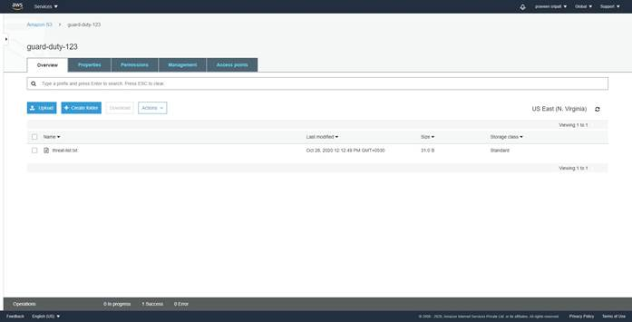
-- Go back to the GuardDuty Management Console and click on Lists under Settings. Click on `Add a threat list`.
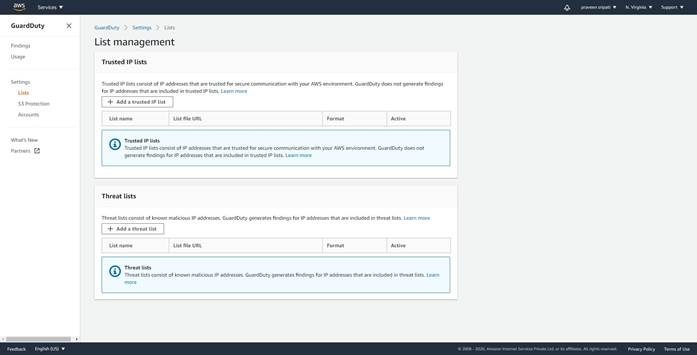
-- Give the list a name, enter the proper location of the file in S3 from the previous step. For the format select `Plaintext`. And finally click on `I agree` and `Add list`.
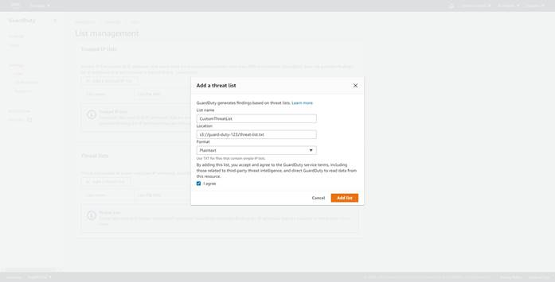
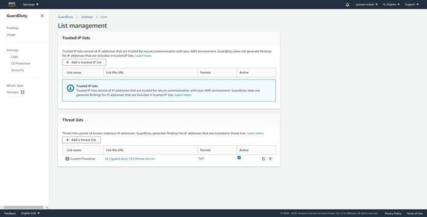
-- From the Putty session connected to the Kali Linux execute the below AWS CLI commands to get the list of S3 buckets and Security Groups. This should be identified as an anomaly by the GuardDuty as the commands are run from Kali Linux which is mainly used for penetration testing.
aws
s3 ls
aws ec2 describe-security-groups
-- Download the VNC Viewer from the below URL and install it as with any other software on the Windows OS. We would be using this later to get the GUI access to the Kali Linux EC2 instance.
https://www.realvnc.com/en/connect/download/viewer/
-- Start the VNC Viewer. Go to `File -> New Connection..`.
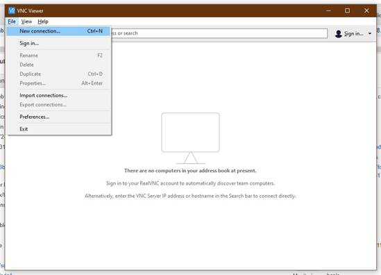
-- Enter the VNC Server details in the below format and click on OK.
public-ip-of-ec2:5901
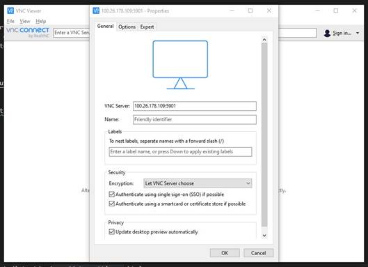
-- An entry should be created as shown below. Double click on it to connect to the Kali Linux.
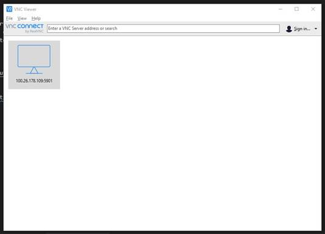
-- When prompted with a warning on `Unencrypted connection`, select `Don’t warn ….` and click on `Continue`.
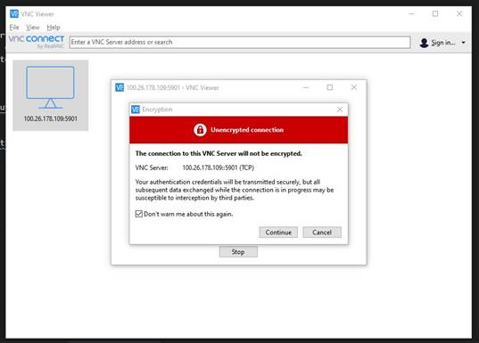
-- Enter the password as `kali123`, select `Remember password` and click on OK.
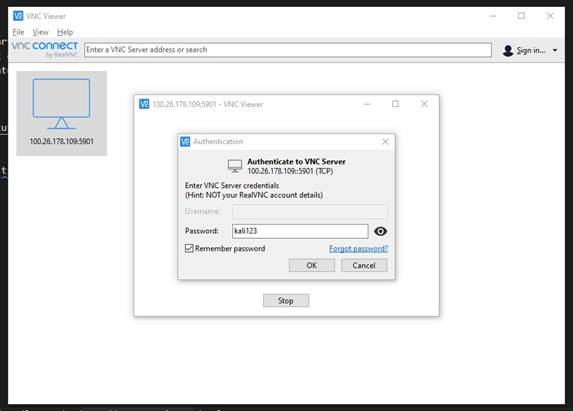
-- The Kali Linux GUI will be displayed as shown below. Navigate to `Applications -> Internet -> Modori` as shown below and start the browser.
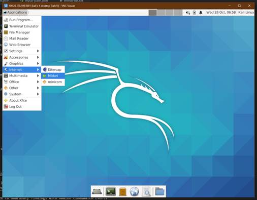
-- Naviagte to google.com using the IP which we got from one of the previous step and the one which has been added to the `threat-list.txt` file in S3. It would redirect to the Google page automatically from the IP address as shown below. This activity also should be triggered as an anomaly by GuardDuty as we have included the Google IP in the threat list for GuardDuty.
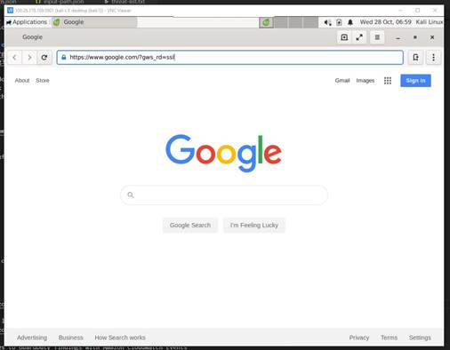
-- From the EC2 Management Console, launch and EC2 instance and select `Microsoft Windows Server 2019 Base`.
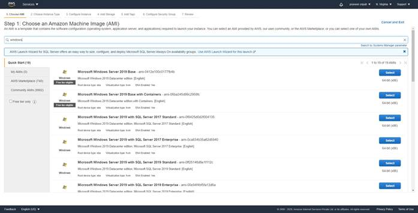
-- Select `t2.micro` and click on Next.
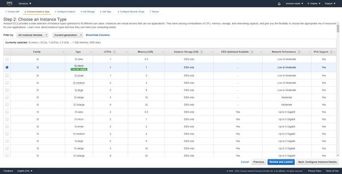
-- Go with all the default options and click on Next.
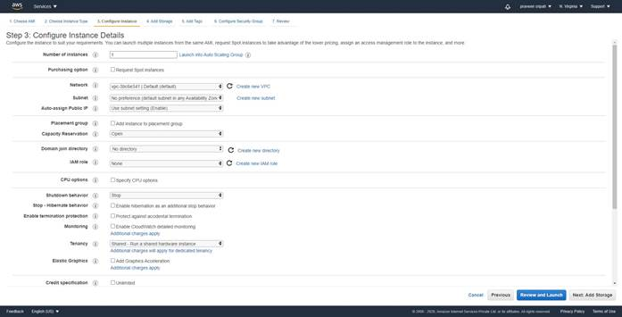
-- Go with the default storage and click on Next.
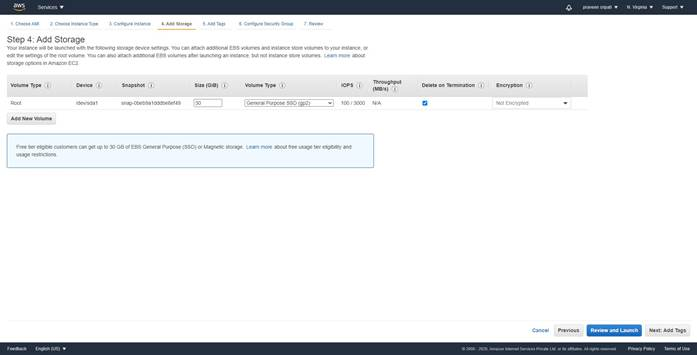
-- Tags are optional. Click on Next.
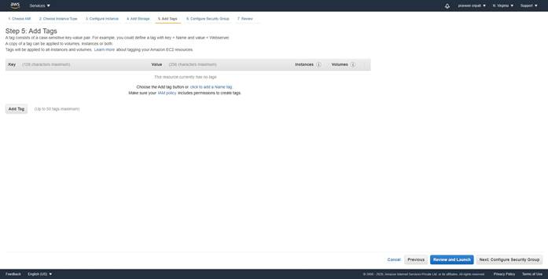
-- Select the Security Group which has been created in one of the previous
steps. Click on Next.
-- Review all the details and click on Launch.
-- Select the KeyPair, select `I acknowledge ….` and click `Launch Instances`.
-- In a few minutes the EC2 would be in a running state.
-- Connect to the EC2 instance as usual using the RDP protocol.

-- Inside the EC2 instance perform the below steps which allows the software to be downloaded by IE.
- Go to Start > Server Manager > Local Server
- Click the On link to the right of IE Enhanced Security Configuration
- Click Off under the Administrators and Users section and Click OK
-- Download the Tor browser for Windows from the below URL and install it as like any other application.
https://torproject.org/download

-- Once the Tor browser has been installed there would be an icon on the Desktop as shown below. Use it to start the Tor browser. Click on the `Connect` button.
-- In a few seconds the Tor browser would be started in the EC2 instance.
Navigate to any onion site. Maybe to http://zlibraryexau2g3p.onion in the Tor browser. This
should also trigger an anomaly in the GuardDuty as we are visiting a Tor site.
-- Go back to the GuardDuty Management Console and there should be a bunch of Findings which GuardDuty has found out as anomalies in the different activities which we performed.
-- Also, we would be getting an email as shown below, since we have integrated
GuardDuty events with SNS Notifications via the CloudWatch Rules.
Conclusion
In this use case we tried to perform few actions which are typically performed by hackers
- Use Kali Linux to probe AWS resources
- Use Root IAM role to perform AWS activities
- Use a TOR Client on an EC2 instance
- Used a browser to reach a malicious IP address
Immediately these activities have been identified by GuardDuty as anomaly and an email alert has been sent via SNS Topic.